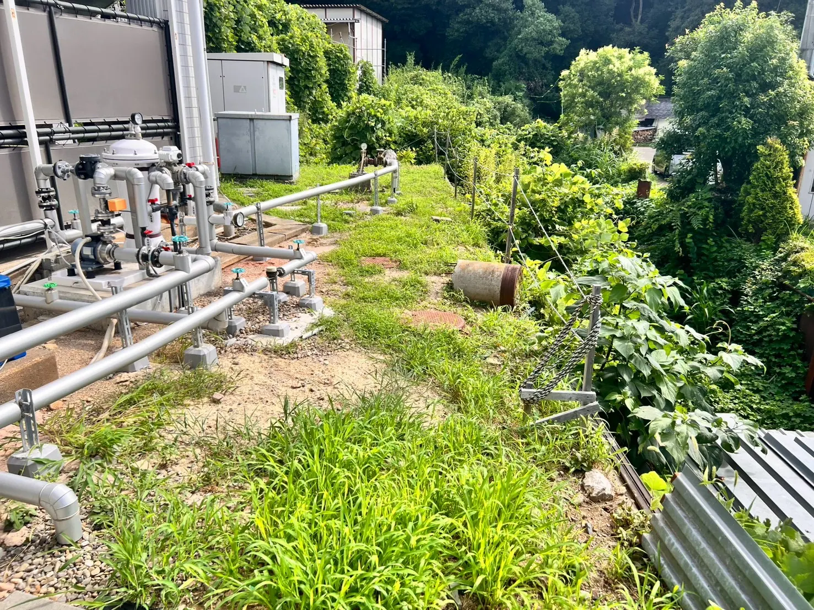
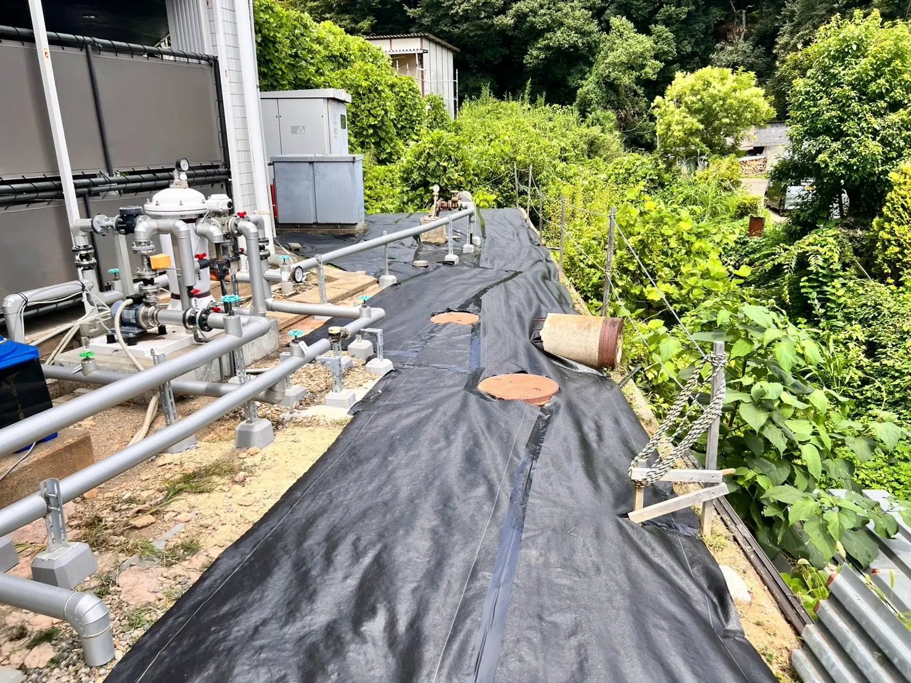
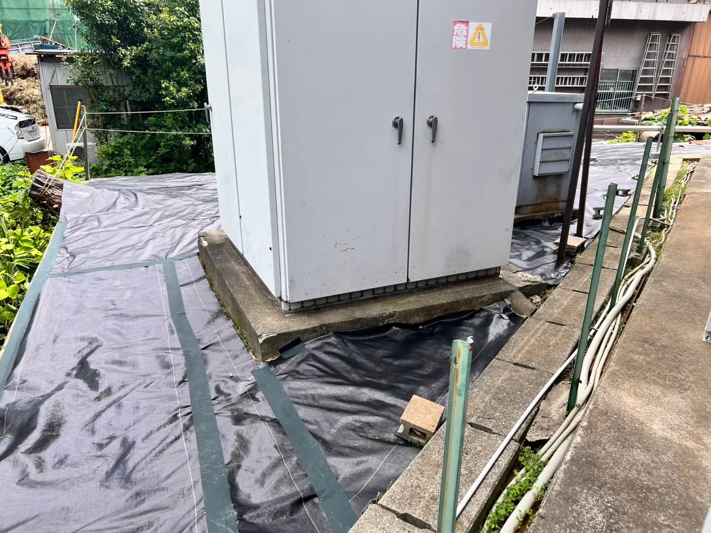
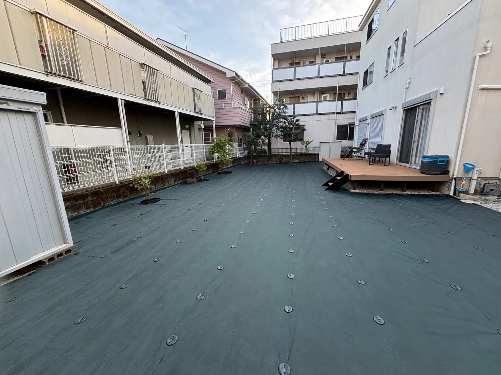
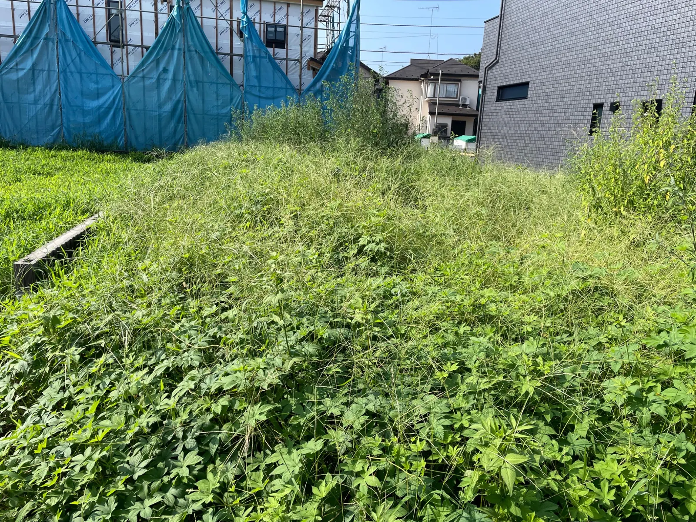
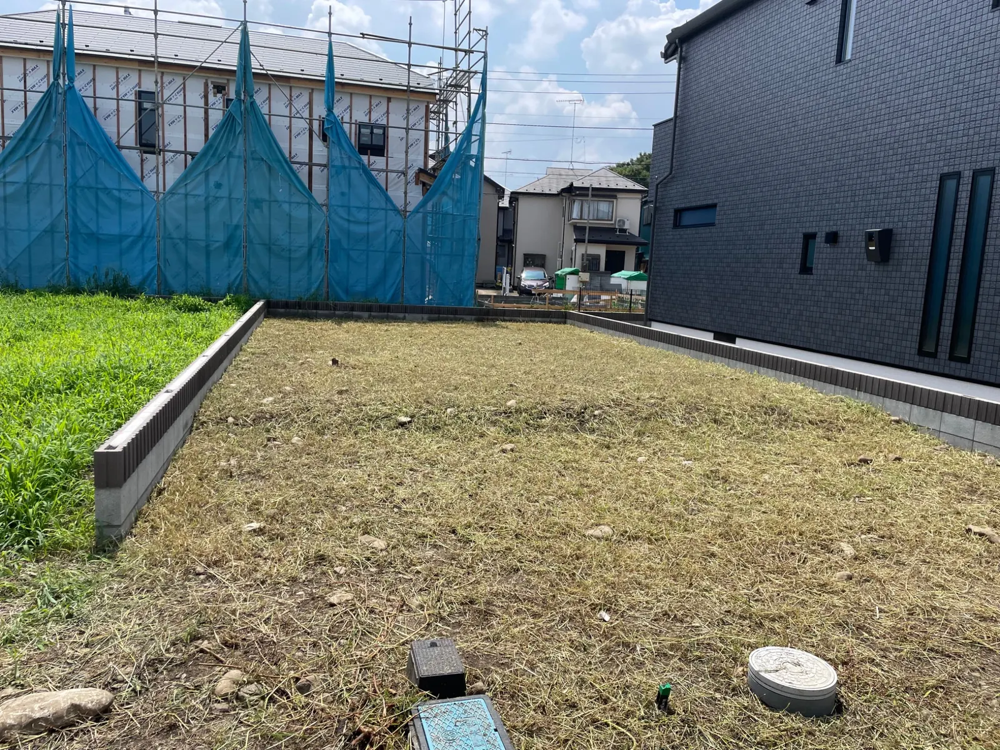
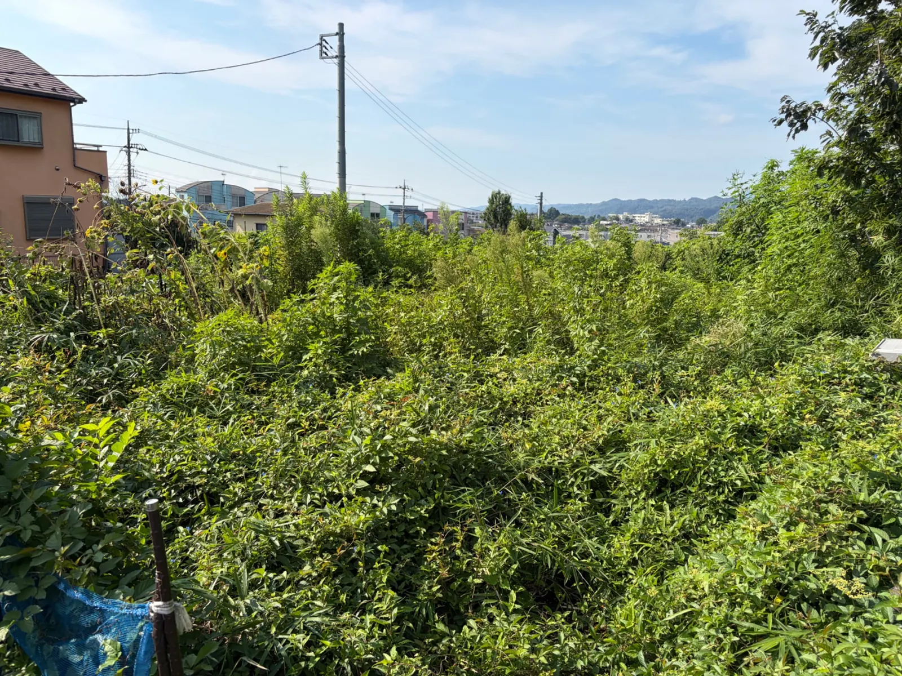
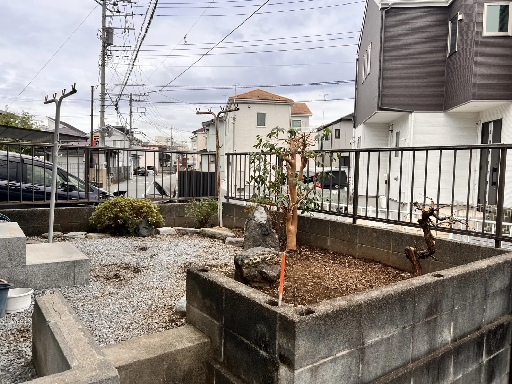
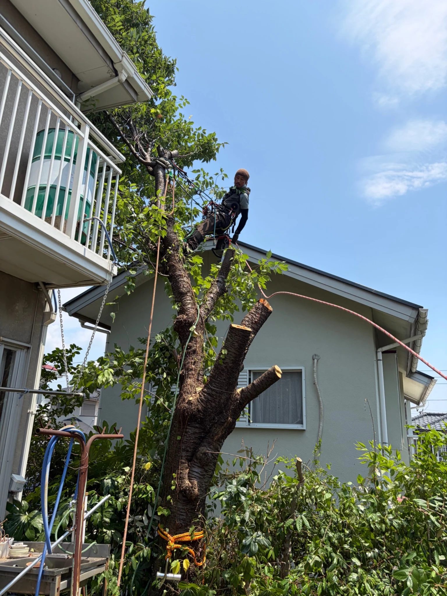
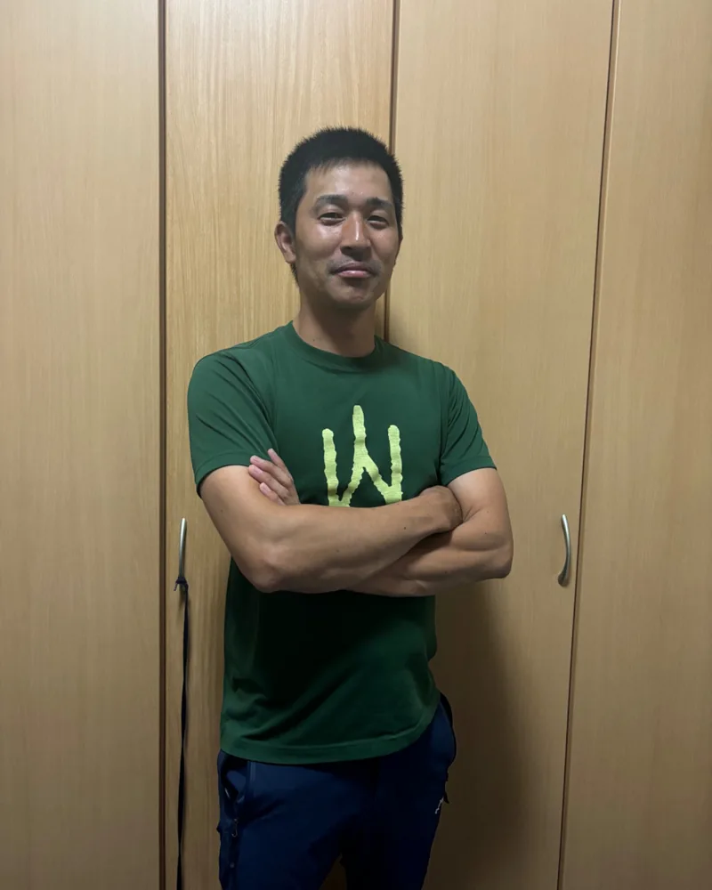

草刈り・空き地整理
伸びた雑草の草刈りから、空き地の整理まで。
大切な場所の緑を、長く、気持ちよく。
安心価格を心がけたお見積もりと、丁寧な対応を大切にしています。
FOR BUSINESS
店舗や施設の緑を、
いつでも気持ちのよい状態に。
商業施設・店舗・工場・不動産管理物件などの草刈りや植栽管理を承ります。定期的な敷地管理を中心に、単発の作業もご相談ください。
法人向け定期管理について詳しく見る庭木が大きくなりすぎた。
草が伸びて困っている。
小さなことだけど頼みたい。
FOR HOME
木一本から、お気軽に。
年齢とともにお庭の手入れが難しくなった、自分では剪定や草刈りができない。そんなお悩みに対応します。小さなご依頼も遠慮なくご相談ください。
お庭のお困りごとを相談するOUR SERVICES
必要な作業を、必要な分だけ。ご状況に合わせてご案内します。
伸びた雑草の草刈りから、空き地の整理まで。
庭木一本のお手入れから、大きくなった木のご相談まで。
草が生えにくい環境づくりをお手伝いします。
緑を美しく維持する管理や、新たな植栽に対応。
店舗・施設から個人のお庭まで、継続的にサポート。
WORKS
草刈り・防草対策・庭木のお手入れなど、実際の施工写真をご紹介します。
配管設備まわりの雑草を整理し、設備の配置に合わせて防草シートを施工。点検しやすい敷地づくりをお手伝いしました。




雑草が広がっていたお庭を整え、防草シートを敷設。お庭の維持管理の負担を減らすための施工事例です。


草が伸びた住宅地の敷地を草刈りし、地面の状態が分かるように整えました。


背丈のある雑草が生い茂った敷地を整理し、広い範囲に防草シートを施工しました。



伸びた草木を整理し、庭木を剪定。植栽まわりの見通しを整えた施工事例です。




住宅に近接した高木の枝おろしを行った施工事例です。ロープを使用した作業中の様子と、作業後の敷地の状態をご紹介します。



※ 施工内容・状況は現場ごとに異なります。掲載写真はお客様のご依頼に応じた作業の一例です。
敷地の管理も、お庭の手入れも。まずはお気軽にご相談ください。
お問い合わせはこちらWHY WIZ TREE
木一本からのご依頼も歓迎。まずはお悩みをお聞かせください。
ひとつひとつの現場に、誠実に向き合います。
安心価格を心がけたお見積もり。損害保険にも加入しています。
COMPANY / MESSAGE
地域の暮らしと事業を支える、身近な植木屋でありたい。

SERVICE AREA
神奈川県・東京都を中心に対応。
エリアや作業内容によって対応可否が異なる場合があります。まずはお気軽にお問い合わせください。
CONTACT
法人の定期管理も、個人のお庭も。内容を伺い、丁寧にご案内します。
※ 即日対応は状況によりご相談となります。LINEでの受付は準備中です。